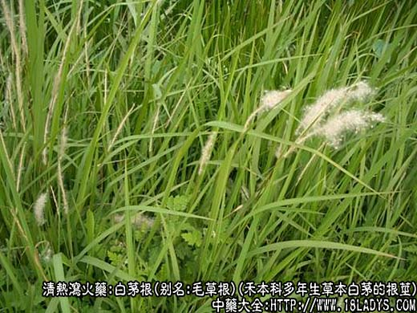
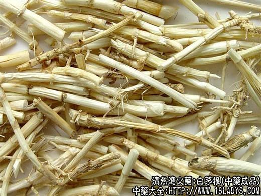
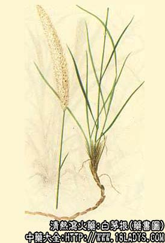

白茅根为常用中药，《神农本草经》列为中品。
别名：毛草根。
来源：为禾本科多年生草本植物白茅的根茎。野生。
产地：全国各地均产。
性状鉴别：根茎细长圆柱形，通常不分歧。长约50厘米以上，直径约2~4毫米。表面乳白色或淡黄色，有光泽。节明显，节上有残留的鳞叶，根及芽痕。味微甜。
以色白，条肥壮，无须根，味甜者为佳。
主要成分：含大量钾盐。并有芦竹素、白茅素、木蜜糖、果糖、葡萄糖、柠檬酸、草酸等。
功效与作用：1、利尿。白茅根水浸剂对正常动物有利尿作用，有效成分可能主要为钾盐。
2、止血。茅花止血作用较显著，能缩短出血时间和凝血时间，并能降低血管通透性。
炮制：切咀：（1）鲜用。（2）生用。（3）炒炭。
性味：甘寒。
归经：入心、脾、胃三经。
功能：清热凉血，止血。利尿。
主治：热病烦渴，吐衄，尿血，水肿，黄疸，肺热咳喘等症。鲜用凉血益阴。炒炭去瘀止血。
临床应用：1、用于治疗咳血、鼻衄、尿血而属热证者，但单用效力不大，需配生地、黑山栀、藕节等。
2、用于治疗急性肾炎，取其有利尿消肿作用，目前常配车前草、玉米须等，据初步观察，有近期治愈效果，方如急性肾炎方。
此外，用茅根水煮猪肉，或以茅根、赤小豆煎汤，对治疗黄疸水肿有一定作用。单用茅根煎汤代茶喝，可清热利尿。
用量：茅根12~30g，茅花3~9g。